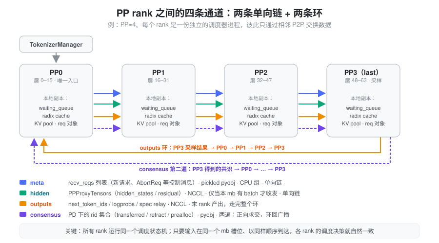
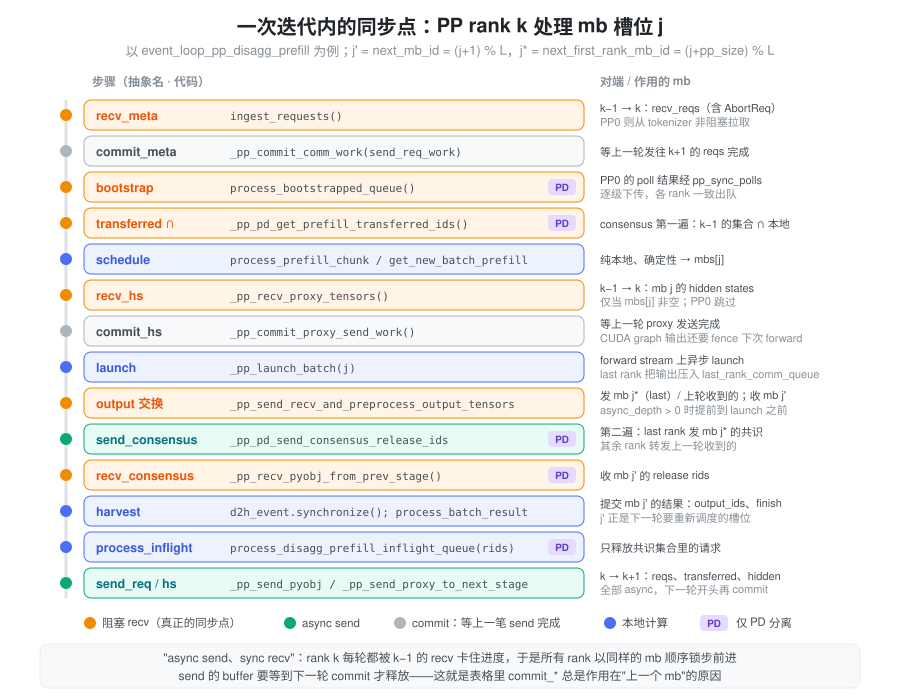
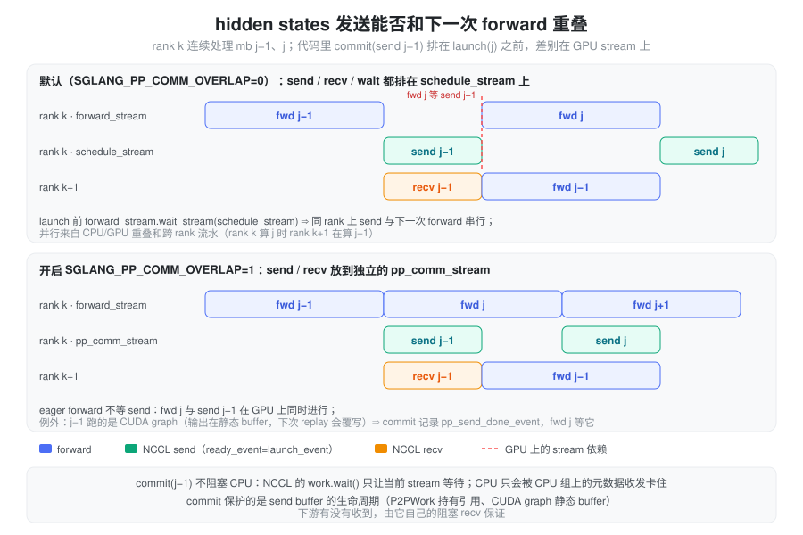
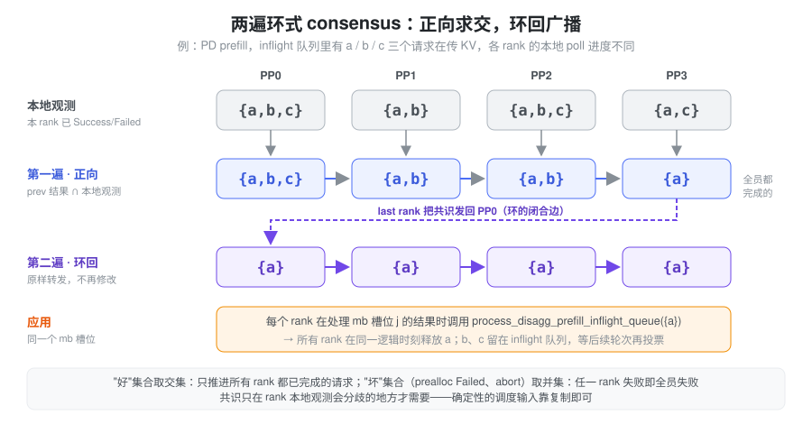
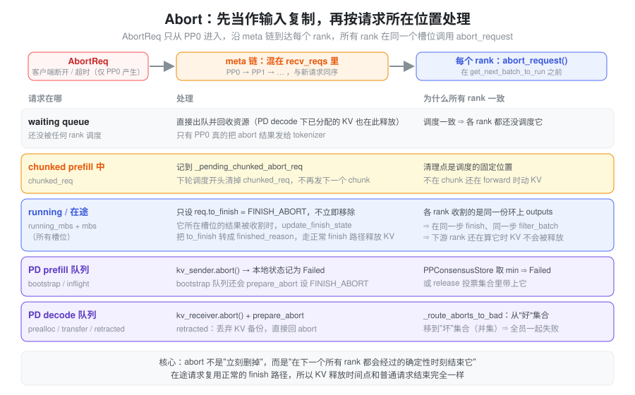

PP（Pipeline Parallelism）把模型按层切成 pp_size 段，每段放在一组 GPU 上，请求的 hidden states 依次流过每一段。 推理场景下真正难的不是”切层”，而是：每个 PP rank 都是一个独立的调度器进程，各有一份 waiting queue、radix cache、KV pool 和 Req 对象。它们之间只有相邻 P2P 通信，没有中心控制器，却必须在每一步做出完全相同的调度决策。下文先讲这个问题和 SGLang 的解法（复制状态机 + 环），再讲一次迭代里的同步点、consensus 怎么构建、稳定性怎么保证、abort 怎么处理，最后对照 PP 和 TP 的取舍。
问题：N 份调度器，必须做同一个决定
假设 PP=4，请求 a 的 prompt 有 10k token，chunked prefill
大小 4096。PP0 决定本步 prefill a 的前 4096 个
token，它算完前 16 层，把 [4096, hidden] 的
hidden states 发给 PP1。PP1
必须恰好也在这一步调度 a 的前 4096 个 token
—— 否则：
- PP1 若调度了 2048 个 token，它准备接收的 tensor shape 和 PP0 发来的对不上，NCCL recv 要么挂死要么读错数据；
- PP1 若这一步把 a 和 b 拼成一个 batch 而 PP0 只调度了 a，后面每一层的 KV 都会写到错误的位置，输出直接错乱；
- PP1 若认为 a 已经 finish（例如它本地判断超时）而 PP0 没有，a 的 KV 在 PP1 被释放、在 PP0 还在被读。
所以 PP 下每个 rank 都必须对”本步跑哪些请求、每个请求跑多少 token、KV 放在哪、谁结束了”达成一致。朴素的做法是让 PP0 每步把完整的调度结果（batch 组成、prefix 命中长度、KV 索引……）广播出去，但这既昂贵（每步一次 CPU 序列化 + 跨机传输），又把 PP0 变成了串行瓶颈。
抽象：复制状态机 + 环
SGLang 的思路是 不同步决策，而是同步输入：所有 rank 运行同一份调度代码（同一个状态机），只要它们以相同的顺序收到相同的输入，就会确定性地算出相同的决策。需要跨 rank 传的输入只有三类：
- meta：从 tokenizer
进来的请求流（新请求、AbortReq 等控制消息）。只有 PP0 连着
tokenizer，它把本轮收到的
recv_reqs原样沿 PP0 → PP1 → … 的单向链转发。 - hidden states：每段的输出激活，单向链。
- outputs：只有最后一个 rank 做采样，它把
next_token_ids（以及 logprob、spec 的 accept 结果等）发回 PP0，再沿链传到其他 rank —— 这是一条环。每个 rank 都用这份采样结果更新本地 Req 的output_ids、判断 finish，于是各 rank 的请求状态保持一致。

第四类通道 consensus 只在”本地观测天然会分歧”的地方才需要：例如 PD 分离时每个 rank 各自往 decode 端传自己那几层的 KV，传输完成的时刻各不相同；这时不能靠复制，只能投票。这是下一节之后的主题。
“相同顺序”靠 microbatch 槽位 保证。每个
rank 维护
pp_loop_size = pp_size + pp_async_batch_depth
个槽位，每个槽位有自己的 running batch；事件循环按
mb_id = 0, 1, …, L-1
轮转。槽位号就是逻辑时钟：所有 rank 在槽位 j 处理同一份
meta、调度同一个 batch，并且在重新调度槽位 j
之前，必须先把槽位 j 上一次的结果（从环上收到的
outputs）提交掉 —— 否则 decode
请求还不知道自己上一步生成了什么 token。
PP4、async depth = 0（L = 4）：
PP0 mb0 mb1 mb2 mb3
PP1 mb0 mb1 mb2 mb3
PP2 mb0 mb1 mb2 mb3
PP3 mb0 mb1 mb2 mb3PP4、async depth = 2（L = 6）：
PP0 mb0 mb1 mb2 mb3 mb4 mb5
PP1 mb0 mb1 mb2 mb3 mb4 mb5
PP2 mb0 mb1 mb2 mb3 mb4 mb5
PP3 mb0 mb1 mb2 mb3 mb4 mb5async depth 的含义：last rank 把每个槽位的输出先压进
last_rank_comm_queue，延迟 depth 轮再发回
PP0。depth = 0 时，last rank 在 launch
完当前槽位后立刻要等这个槽位的输出就绪才能发出，CPU 和 GPU
是串行的；depth > 0 时它发的是 depth
轮之前就跑完的槽位，GPU 计算和 CPU 后处理可以重叠，也避免
last rank 成为拖慢整条流水线的 straggler。代价是多占 depth
个槽位的显存和请求延迟。
同步点：一次迭代里 meta / 请求 / hidden states 在哪里交汇
以 PD prefill 的事件循环
event_loop_pp_disagg_prefill 为例（普通
event_loop_pp 是它去掉 PD 步骤的子集），PP rank
k 在槽位 j 的一轮迭代如下。每轮迭代涉及三个槽位：当前槽位
j、下一个槽位 j’ = (j+1) % L、以及”last rank
本轮要发回的槽位” j* = (j + pp_size) % L。

以 PP1 处理 mb1、同时收割 mb2 为例：
| prev mb | current mb | next mb | next_first_rank_mb |
|---|---|---|---|
recv_meta(mb1) |
|||
commit_meta(mb0) |
|||
prefill_chunk(mb1) |
|||
get_new_prefill_batch(mb1) |
|||
recv_hs(mb1) |
|||
commit_output(next_first) if async_depth > 0 |
|||
commit_hs(mb0) |
|||
launch(mb1) |
|||
commit_output(next_first) if async_depth == 0 |
|||
send_consensus(next_first) |
|||
recv_consensus(mb2) |
|||
commit_consensus |
|||
harvest_wait(mb2) |
|||
harvest(mb2) |
|||
process_inflight(mb2) |
|||
send_req(mb1) |
|||
send_hs(mb1) |
三类数据各自的同步方式
meta（请求流）。
ingest_requests() →
SchedulerRequestReceiver.recv_requests()：PP0
的 attn-TP-0 从 tokenizer 的 zmq socket
非阻塞拉取；其他 rank 用
point_to_point_pyobj 从 k−1
阻塞接收。拿到后先在本 rank 的 attn TP/CP
组内广播，再 process_input_requests
入队，最后把同一个 recv_reqs 列表 async 发给
k+1。注意 PP0 “这一轮没收到请求”也会发一个空列表 ——
链上每一轮都有一条消息，这正是锁步的节拍器。
hidden states。 只在 mbs[j]
非空时收发（两端都按同样的调度决策判断 batch
是否为空，所以不会错配）。发送方用
ready_event=launch_event 让 NCCL send 等
forward 结束，不阻塞 CPU；如果这次 forward 跑的是 CUDA
graph，输出是 graph 的静态 buffer，下一次 replay 前必须等
send 读完，所以 _pp_commit_proxy_send_work
会记录 pp_send_done_event 让下一次 forward
等待。
outputs。 hidden states 和 outputs
走的是同一条 pp_group NCCL
链，但两者的槽位节奏不同（hidden 是当前槽位 j，outputs
是收割槽位 j’），所以每条 tensor dict 都带
__msg_type__（"proxy" /
"output"），_pp_recv_typed_dict
收到类型不符的消息就先放进 inbox 暂存，避免把 hidden states
当成 token id 解释。收到 outputs 后
_pp_prep_batch_result 把它重建成
GenerationBatchResult，再走普通的
process_batch_result —— 所以每个 rank
都会执行完全相同的 output 处理，包括追加
token、检查 stop 条件、释放 KV。纯中间 chunk 的
prefill（单请求、不是最后一个 chunk、不要
logprob）不产生有意义的 token，开启
SGLANG_PP_SKIP_PURE_CHUNKED_OUTPUT_COMM
后会跳过这次环上通信，各 rank 本地用占位结果代替。
为什么是 “async send + sync recv”
event_loop_pp 的 docstring 写得很直白：“We
use async send but sync recv to avoid desynchronization
while minimizing the communication overhead.” 所有 send 都是
async 的，返回一个
P2PWork，在下一轮对应位置才
commit（wait）；所有 recv
都是阻塞的。效果是：rank k 永远不会跑到 rank k−1
前面（它要等 k−1 的 meta 和 hidden），但 rank k−1 也不必等
rank k 收完才能继续。表里 commit_*
总作用于上一个 mb，就是这个原因 —— send buffer 要保活到这次
send 结束（见下文）。
hidden states 发送如何与计算重叠
事件循环里
commit_hs（_pp_commit_proxy_send_work）紧挨在
launch 之前，容易读成”必须等下游收到 mb j−1 的
hidden，才能 launch mb j”。这句话在代码顺序上成立，但要分清
CPU 和 GPU stream
两个层面：
- commit 不阻塞 CPU。 一次
send_tensor_dict分两部分：元数据（shape / dtype，pickle 后）走 CPU 组，hidden / residual 走 NCCLisend。对 NCCL 来说work.wait()只是让当前 stream 等这次 send 结束，CPU 立即返回去 launch。发送前还有wait_event(launch_event)，所以 GPU 上 send 会等本 mb 的 forward 算完再开始，CPU 却不用等。 - commit 保护的是 buffer
生命周期，不是”下游收到”。
P2PWork持有被发送 tensor 的引用，commit 之后才释放；下游有没有收到，由它自己的阻塞 recv 保证。 - “sync recv” 卡住 CPU 的是元数据。
recv_tensor_dict先在 CPU 组上阻塞收元数据，tensor 部分的irecv(...).wait()同样只是 stream 级等待。所以下游 CPU 在上游 launch 完、发出 send 时就能继续调度，而不是等上游 GPU 算完；真正的数据依赖留在 GPU stream 上。
同一个 rank 上 send j−1 能不能和 forward j 在 GPU
上并行，取决于
SGLANG_PP_COMM_OVERLAP（默认关闭）：

- 默认：串行。
pp_comm_stream_ctx是nullcontext，send、recv 和 commit 的 wait 都排在schedule_stream上；launch 时_pp_wait_forward_dependencies执行forward_stream.wait_stream(schedule_stream)，于是 forward j 在 GPU 上要等 send j−1 结束。较大的 NCCL send 要等对端 recv 匹配，这时”下游不接走 j−1，本 rank 的 forward j 就开始不了”在 GPU 层面基本成立。并行来自 CPU/GPU 重叠和跨 rank 流水（rank k 算 j 的同时 rank k+1 算 j−1）。 - 开启后：eager forward 与 send 重叠。
send / recv 放到独立的
pp_comm_stream，commit 的 wait 只作用于 comm stream，forward stream 不依赖它。recv 一侧记录pp_proxy_recv_event，forward 只等这个真正的数据依赖。 - CUDA graph 例外。 上一次 forward
若跑的是 CUDA
graph（
send_proxy_requires_forward_fence = result.can_run_cuda_graph），输出是 graph 的静态 buffer，下次 replay 会覆写同一块内存。此时 commit 在 comm stream 上记录pp_send_done_event，forward j 先等它；代码注释是 “Eager prefill remains overlapped”。
Consensus：本地观测会分歧时怎么办
复制状态机的前提是”调度只依赖被复制的输入”。但有几类状态是每个 rank 自己观测的，天然不同步：
- KV 传输进度（PD 分离）：每个 PP rank
各自把自己那几层的 KV 发给 decode 端，
poll()返回 Success 的时刻各不相同； - 异步后台任务：HiCache 的 L2/L3 加载、写回进度，grammar（结构化输出）的后台编译；
- 本地资源判断：decode 端的 prealloc 是否成功、是否需要 retract；
- 墙钟：超时判断。
如果每个 rank 按自己的观测行事，“PP0 认为 a 传完了、释放了 a 的 KV，PP2 还在传”就会发生。SGLang 的原则是：凡是本地观测，都先汇总成一个所有 rank 共享的结论，再以这个结论为输入去改状态。 具体有三种构建方式。
方式一：PP0 做 leader，沿链下发
最简单的一种：只有 PP0 去观测，观测结果沿 PP0 → PP1 → … 下发，其余 rank 直接采用。
- 超时
abort：
_poll_timeout_aborts()只在 PP0（attn-TP-0）上执行，产出的AbortReq混进recv_reqs走 meta 链。docstring：“every rank must drop the same requests in the same iteration, or the extend-vs-decode decision splits and the collectives hang.” - grammar
编译就绪：
GrammarManager._pp_sync_ready_failed—— PP0 在 TP 组内对 ready 取交集、failed 取并集，再用P2PTag.GRAMMAR_PP_SYNC沿链下发。 - HiCache
进度：
UnifiedRadixCache._all_reduce先在 PP0 的 TP/CP 组内做 MIN all-reduce，再_pp_sync把结果逐级 recv/send 给后续 rank。query_storage_hit_length、writing_check、loading_check等都走这条路，所以所有 rank 的 prefix 命中长度、加载完成数是同一个值。 - PD prefill 的 bootstrap
poll：
poll_and_all_reduce_prefill_pp—— PP0 poll 后经pp_sync_polls（P2PTag.DISAGG_BOOTSTRAP_PP_SYNC）下发。
这种方式要求 PP0 的观测本身就能代表全体。对 grammar、超时这类”只和请求本身有关”的状态成立；对 bootstrap 这种每个 rank 的 KV sender 各自握手的状态，PP0 光看自己是不够的 —— 所以 bootstrap 的 PP0 观测本身先经过了一次汇总（见方式三）。
方式二：两遍环式投票
PD 分离下的 KV 传输完成（prefill 端的 release、decode 端的 transferred）、decode 端的 retract 和 prealloc 都用这种方式，每个 rank 的观测都要参与：
- 第一遍（正向求交）：PP0
把本地”已完成”的 rid 集合发给 PP1；PP k
收到后与自己的本地观测求交，再发给
k+1（
_pp_pd_get_prefill_transferred_ids/_pp_pd_get_decode_transferred_ids/_pp_pd_get_retract_ids）。走到 last rank 时，集合里只剩”所有 rank 都完成”的请求。 - 第二遍（环回广播）：last rank
把结论发回
PP0，再原样沿链转发（
_pp_pd_send_consensus_release_ids/_pp_pd_send_consensus_bootstrapped_ids）。每个 rank 在收割对应槽位时用这份集合去改状态，例如process_disagg_prefill_inflight_queue(rids_to_check)只释放共识集合里的请求。

两遍的消息都绑在槽位上（tmbs[mb_id]、rmbs、pmbs
记录每个槽位当时的观测），和 meta、outputs
共用同一个槽位节奏，所以”在哪一轮应用共识”在所有 rank
上也是一致的。
集合运算的方向体现了安全性：“好”的集合取交集（推进一个请求需要全员同意），“坏”的集合取并集（任何一个
rank
失败，全员一起失败）。_pp_pd_get_prealloc_ids
里就是这样分别处理 [KVPoll.WaitingForInput] 和
[KVPoll.Failed] 两组 rid 的。
方式三：PPConsensusStore —— 复制到 PP0 再取最小值
PD prefill 的 bootstrap 改用了一种不走两遍环的方案：KV
manager 的
request_status（bootstrap_room → KVPoll）在
PP>1 时是一个
PPConsensusStore（disaggregation/pp_consensus_store.py）。各
rank 像用普通 dict 一样更新它，每次修改都由后台线程经 ZMQ
PUSH 异步复制到 PP0；PP0 调
check_status_pp_consensus(room) 时取所有 rank
的状态，任一 rank 还没有记录就返回 Bootstrapping，否则返回
min(statuses)。
KVPoll
是有序的：Failed=0 < Bootstrapping < WaitingForInput < Transferring < Success，所以
min 天然就是”最慢的那个 rank 的进度”，并且任一 rank
Failed 则结论为 Failed ——
和方式二的交集/并集是同一个语义，只是把投票从关键路径上的同步
P2P 换成了后台复制。PP0 得出结论后，再走方式一的
pp_sync_polls 下发。
稳定性：锁步靠什么保证
PP 的各 rank 是”弱同步”的：没有每步一次的全局 barrier，只靠相邻 rank 的阻塞 recv 维持节拍。稳定性因此建立在两条约束上 —— 决策一致（不会分叉）和 通信不死锁（不会互相等）。
决策一致：让所有输入都可复制
每一条可能让调度分叉的输入都要么被复制，要么经过 consensus：
| 分叉来源 | 处理方式 |
|---|---|
| 请求到达时刻 | 只有 PP0 收，recv_reqs 沿 meta 链复制，所有
rank 在同一槽位入队 |
| 采样结果 | last rank 采样，outputs 环复制，所有 rank 执行同一个
process_batch_result |
| KV pool 容量 | 各段层数不同，可容纳的 token 数不同；启动时
_apply_token_constraints 在 world group 上对
token_capacity 做 MIN all-reduce，HiCache host
pool 同理 |
| 内存判断 / retract | 容量相同 + 输入相同 ⇒
check_decode_mem、retract_decode
的结果相同，无需通信；PD decode 的 retract
额外走两遍投票 |
| radix cache 的 match / evict | 插入、淘汰序列相同 ⇒ 树结构相同；LRU 用逻辑计数器而不是墙钟 |
| 墙钟（超时） | 只在 PP0 判断，产出 AbortReq 走 meta 链 |
| 后台异步任务（HiCache、grammar、KV 传输） | 方式一 / 二 / 三的 consensus |
“容量相同 + 输入相同 ⇒
决策相同”这条推理很容易被一个不起眼的本地状态打破，比如某处用了
time.time()、遍历了一个无序 set、或者某个 rank
多跑了一次 cache 清理。为此有一个调试开关
SGLANG_ENABLE_RANK_CONSENSUS_CHECKER（utils/rank_consensus_checker.py）：UnifiedRadixCache
的
match_prefix、insert、evict
等方法挂了
@rank_consensus(same_params=..., same_results=...)，开启后每个
rank 把调用序列和指定的参数/结果做哈希，在 TP 组和
pp_group 上用 MIN/MAX all-reduce
比较摘要，不一致就 os._exit(1)
并打印分歧点。关闭时装饰器在 import
时直接返回原函数，零开销。
通信不死锁
- async send + sync
recv：上游永远不等下游，下游只等上游，链上不会形成环形等待。send
的 buffer 由
P2PWork持有，到下一轮 commit 才释放。 - 消息分类型：hidden 和 outputs 共用 NCCL
链但节奏不同，用
__msg_type__+ inbox 解复用；pyobj 类的 consensus 则用不同的 P2P tag（GRAMMAR_PP_SYNC、DISAGG_BOOTSTRAP_PP_SYNC、HICACHE_PP_SYNC）隔离。 - 环上的发收顺序：outputs
是一个真正的环，每个 rank 既要发也要收。CUDA 上 isend
只是入队，“先发后收”是安全的；但在 isend
实际阻塞的后端（XPU），或者 PP+spec 一次要发很多 tensor
时，全员先发会形成环形等待。此时按
pp_rank奇偶交错：偶数 rank 先发后收，奇数 rank 先收后发（_pp_send_recv_and_preprocess_output_tensors）。NPU 的 PP=2 则直接用batch_isend_irecv原子提交。 - 槽位是空也要对齐：两端对”槽位 j 有没有
batch”的判断来自同一份调度结果，所以 hidden 的收发、outputs
的收发要么同时发生，要么同时跳过；PD 的
tmbs[j]是否为 None 同理。 - 容忍观测时差：
process_disagg_prefill_inflight_queue收到共识 rid 时，若本地 poll 还没到终态，不报错，记一条 warning 当作 undone，等下一轮再处理。
出了问题时，一个 rank 卡住会通过阻塞 recv
让下游全部卡住，PP 本身没有跨 rank 的超时机制；兜底是每个
rank 各自的 scheduler watchdog（forward_ct
长时间不前进就 dump batch 和 pool 状态），以及
PPConsensusStore 后台线程出错时的
os._exit(1) 快速失败。
Abort：请求中途被取消
abort 是 PP 稳定性里最容易出事的场景。它从客户端异步到来，到达时请求可能在任何位置：还在排队、chunked prefill 做了一半、正在某个槽位里被 forward（而且 PP0 已经 launch 了这个槽位，PP3 可能还没开始算），或者在 PD 的各个传输队列里。如果某个 rank “立刻删除”它，就会出现：
- 该 rank 下一步的 batch 少了一个请求，其他 rank 没少 → hidden states shape 对不上，NCCL 挂死；
- 该 rank 释放了请求的 KV，而这个请求所在槽位的 forward 还在下游 rank 上跑，或者它的 outputs 还在环上 → 收割时找不到请求，或者 KV 被新请求复用后数据错乱。
SGLang 的处理分两步。第一步：把 abort
当作一个普通输入来复制。 AbortReq 只从
PP0 进来，混在 recv_reqs 里走 meta 链，每个
rank 在同一个槽位、在 get_next_batch_to_run
之前调用 abort_request。超时产生的 abort
也一样只在 PP0
产生、走同一条路。第二步：按请求所在位置，选一个所有
rank 都会经过的确定性时刻去结束它。

最关键的是在途请求（_collect_inflight_batches
在 PP 下返回
[*running_mbs, *mbs]，覆盖所有槽位）：abort_request
只设置
req.to_finish = FINISH_ABORT(...)，代码注释写得很清楚
—— “The request will still run one decode forward pass. Then
we reuse all existing code to clean up the KV cache
allocation.”
等到这个请求所在槽位的结果从环上收割回来，process_batch_result
里的 update_finish_state 把
to_finish 转成
finished_reason，后面就是普通请求结束的流程：释放
KV、下一次调度时被 filter_batch 过滤掉。所有
rank 收割的是同一份
outputs，所以它们在同一步结束这个请求；而收割发生在这个槽位的
forward 在所有 rank 上都跑完之后，KV 不会被提前释放。
chunked prefill 中的请求则先记到
_pending_chunked_abort_req，在下一次
get_next_batch_to_run 开头由
process_pending_chunked_abort 处理：清掉
chunked_req，不再发下一个 chunk；已经 launch
的那个 chunk 照常收割。docstring：“tearing it down
mid-iteration is unsafe”。
PD 分离下，abort 会落到 KV 传输的状态机上，再借 consensus 统一结果：
- prefill
端：
kv_sender.abort()把本地状态记为 Failed。bootstrap 队列里的请求，Failed 写进PPConsensusStore，PP0 取 min 得到 Failed，经pp_sync_polls下发，所有 rank 一起handle_bootstrap_failure；inflight 队列里的请求，Failed 属于”已终结”，进入 release 投票集合，被所有 rank 一起移出。 - decode 端：prealloc 队列的请求在
kv_receiver.abort()之外，PP>1 时还会prepare_abort设置FINISH_ABORT。_pp_pd_get_prealloc_ids里的_route_aborts_to_bad把这些 rid 从”好”集合（交集）移到”坏”集合（并集），保证所有 rank 把它当失败处理 —— 即使它的 sender 还卡在 Bootstrapping、永远不会报告终态，也能被清出去。retracted 队列里的请求直接丢弃 KV 备份并回复 abort。
还有一个容易忽略的细节：只有 PP0 的 attn-TP-0 能给
tokenizer 回消息（其他 rank 的发送端是
SenderWrapper(None)）。所以每个 rank
都”发送”abort 结果，但客户端只会收到一次。
PP 和 TP 对比
讨论 PP 和 TP 方案在 Prefill 阶段的优劣
- PP 相比 TP
- 优势：
- 可以减少通信操作
- AllReduce/Dispatch/Combine
- 某些 kernel 计算效率更高
- fused_moe_w2
- 不同卡不存在重复计算
- q_a_and_kv_a_proj
- fused_moe
- moe_gate
- expert_up_proj
- expert_down_proj
- 可以做多机部署
- 可以减少通信操作
- 劣势
- 不同卡不存在对于单一 batch 的并行计算，TTFT 天然大
- 不同卡是弱同步状态，稳定性建设难度更大
- 不同 rank 的 prefix cache 命中同步（HiCache 等异步命中走 PP0 leader 下发，见上文 Consensus）
- 请求被 abort 的时候如何维持稳定性（见上文 Abort）
- 优势：
小结
PP 的核心抽象是 复制状态机：各 rank 不同步决策，只同步输入 —— 请求流沿链复制，采样结果沿环复制，microbatch 槽位充当所有 rank 共享的逻辑时钟。只有在本地观测天然分歧的地方（KV 传输、后台异步任务、墙钟）才引入 consensus，“好”的取交集、“坏”的取并集（或等价的 min）。abort 也被纳入同一框架：先作为输入复制到所有 rank，再在一个所有 rank 都必然经过的确定性时刻（槽位收割、调度开头、consensus 结论）结束请求。理解了”什么输入被复制、什么观测要投票”，就能判断一个新功能放进 PP 后会不会让各 rank 分叉。